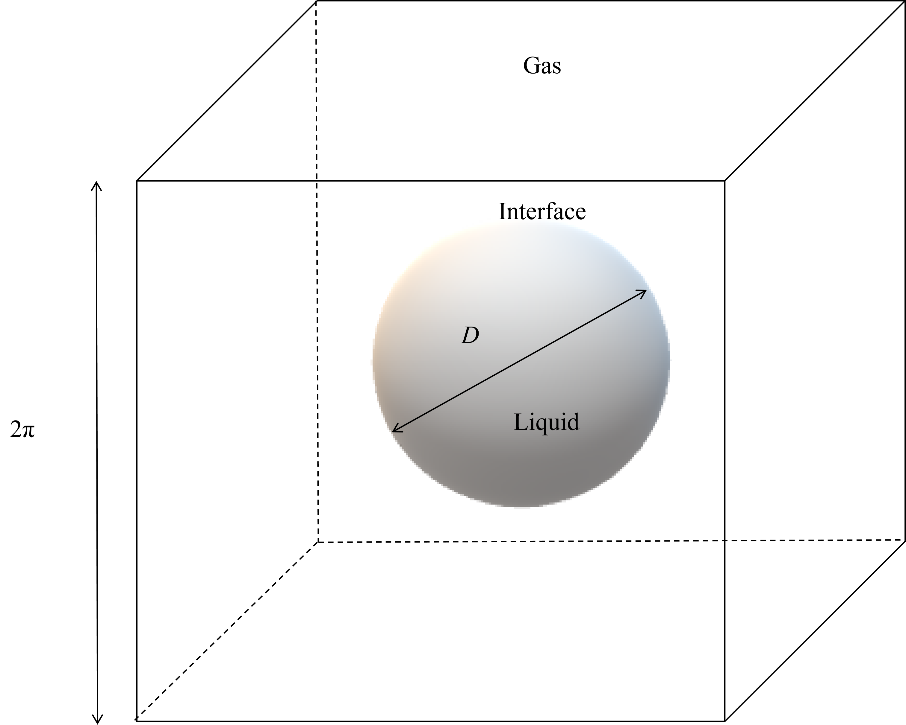

Data Layout
data/Gvol/, data/P/, and data/V/ contain snapshot files named by six-digit IDs.
Seed dataset
Direct numerical simulation data for a liquid droplet breaking up in forced homogeneous isotropic turbulence.
Description
This dataset contains DNS data of a deforming and breaking droplet
in homogeneous isotropic turbulence. The case corresponds to Weber
number We = 15, with unity density and viscosity ratios.
The released fields include volume fraction / phase indicator
Gvol, pressure P, and velocity vector
V over 81 snapshots.

Quick Info
| Host | ModelScope |
|---|---|
| Flow configuration | Droplet breakup in forced homogeneous isotropic turbulence |
| Method | Direct numerical simulation with a conservative level-set interface-capturing scheme |
| Weber number | 15 |
| Reynolds number | 100 |
| Density / viscosity ratios | Unity density ratio and unity viscosity ratio |
| Variables | Gvol, P, V |
| Snapshots | 81 snapshots, 000001 to 000081 |
| Grid | Uniform Cartesian grid, 256 x 256 x 256 cell-centered fields |
| Domain | [-pi, pi]^3 |
| Format | Custom binary files with a 244-byte header and little-endian float32 payload |
| License | CC BY 4.0 |
| Related article DOI | 10.1016/j.ijmultiphaseflow.2018.06.009 |
Files and Loading
data/Gvol/, data/P/, and data/V/ contain snapshot files named by six-digit IDs.
Gvol and P contain 256 x 256 x 256 float32 values after the header.
V contains three consecutive components and is read as (3, 256, 256, 256).
The ModelScope package includes load_example.py for listing snapshots and loading selected fields.
python load_example.py --list
python load_example.py 000001 --variables Gvol P V --mmapInitial Condition
The turbulence is maintained by linear forcing. The initial velocity field is synthesized from a Passot-Pouquet energy spectrum in Fourier space. The case uses periodic boundary conditions in all three directions.

Known Limitations